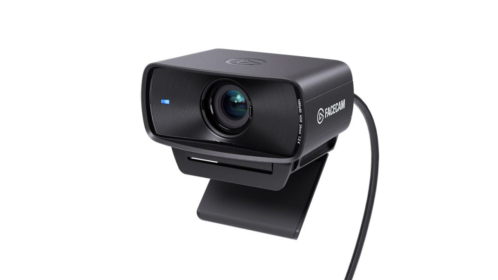

← All Guides
Best Webcam for Streaming 2026: What 4 Reviewers Agree On
Aggregated from 4 YouTube reviews · Updated 2026-10-03

Elgato Facecam MK.2
Recommended by 3 out of 4 reviewers as the streaming specialist: uncompressed 1080p60, full manual control, and deep OBS/Stream Deck integration.
📊 Quick Comparison
| # | Product | Recommended By | Best For | Price |
|---|
| 1 | Elgato Facecam MK.2 | 3/4 reviewers | Best for streamers | $199.99 |
| 2 | Logitech Brio 4K | 3/4 reviewers | Best 4K versatility | $199.99 |
| 3 | Razer Kiyo Pro Ultra | 2/4 reviewers | Best image quality | $299.99 |
| 4 | Razer Kiyo Pro | 2/4 reviewers | Best low-light under $200 | $199.99 |
💬 Reviewer Consensus
Common Pros
- Elgato Facecam MK.2: fixed focus and manual exposure never hunt during a stream (3/4 mention)
- Logitech Brio 4K: 4K resolution lets you crop tighter in OBS without quality loss (3/4 mention)
- Razer Kiyo Pro Ultra: massive sensor gives near-DSLR low-light image quality (2/4 mention)
- Razer Kiyo Pro: best dim-room performance under $200 (2/4 mention)
Common Cons
- Elgato Facecam MK.2: no built-in microphone, you need a separate mic (3/4 mention)
- Logitech Brio 4K: most platforms cap live video at 1080p, so 4K is overkill for pure streaming (2/4 mention)
- Razer Kiyo Pro Ultra: expensive; Windows-centric software limits Mac users (2/4 mention)
🔍 Detailed Breakdown
Elgato Facecam MK.2
🛒 Amazon🛒 TemuUncompressed 1080p60 with full manual ISO and shutter control via Camera Hub; fixed focus never hunts mid-stream.
Resolution: 1080p
FPS: 60
FOV: 84 degrees
Focus: Fixed
Microphone: None (bring your own mic)
Best for: Best for streamers · $199.99
Logitech Brio 4K
🛒 Amazon🛒 TemuTrue 4K at 30fps with HDR, three selectable fields of view, and Windows Hello; best pick for cropping in OBS without losing quality.
Resolution: 4K
FPS: 30 (4K) / 60 (1080p)
FOV: 65/78/90 degrees selectable
Focus: Autofocus
Microphone: Dual omnidirectional mics
Best for: Best 4K versatility · $199.99
Razer Kiyo Pro Ultra
🛒 Amazon🛒 TemuLargest sensor ever in a webcam (1/1.2-inch Sony STARVIS 2); DSLR-like depth with true optical bokeh and elite low-light clarity.
Resolution: 4K
FPS: 30 (4K) / 60 (1080p)
FOV: 72-82 degrees
Focus: AI-powered autofocus
Microphone: Dual mics
Best for: Best image quality · $299.99
Razer Kiyo Pro
🛒 Amazon🛒 TemuSony STARVIS sensor and f/1.8 lens make it unbeatable in dim rooms; uncompressed 1080p60 and HDR at 30fps.
Resolution: 1080p
FPS: 60
FOV: 80/90/103 degrees selectable
Focus: Autofocus
Microphone: Stereo mics
Best for: Best low-light under $200 · $199.99
❓ Frequently Asked Questions
Why is the Elgato Facecam MK.2 our top pick?
It's recommended by multiple reviewers for its overall balance of performance, features, and value. See the detailed breakdown above.
📺 Video Sources
Show 4 review videos
📺
OBSBOT (blog review with embedded video tests) — 8 Best Webcams for Streaming 2026 (Twitch, YouTube, Zoom)
Watch Video📺
ReviewAtlas — Is Which Webcam should I buy Worth It? Honest Review (2026)
Watch Video📺
Slope Reviews (hands-on video review roundup) — Best Webcam for Streaming Under $200 2026
Watch Video📺
YouTube roundup (Medium summary) — Best Webcam for Streaming 2026 | Which Webcam Should You Buy For Streaming?
Watch Video